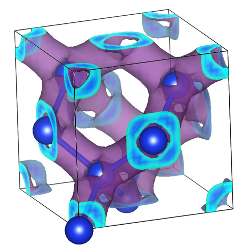

SAFIRE for ab initio solids#
{kind=link}

Some preliminaries#
The Hamiltonian#
SAFIRE uses an orthonormal orbital basis to represent solid-state Hamiltonians in second quantization. These orbitals are typically obtained from plane-wave density functional theory (DFT) calculations (such as Kohn-Sham orbitals), but SAFIRE itself is agnostic to how the orbitals were originally computed.
For crystalline solids, Bloch’s theorem and translational symmetry allow the problem to be expressed in terms of k-points in the Brillouin zone. The Hamiltonian takes a k-point factorized form:
where \(k\) and \(q\) are k-point indices sampling the Brillouin zone, \(i,j,k,l\) are orbital indices at each k-point, \(\sigma, \sigma'\) are spin indices, \(E_0\) includes nuclear repulsion and other constant terms, \(h^k_{ij}\) are one-body matrix elements (kinetic energy and electron-ion interactions), and \(V^{kq}_{ijkl}\) are two-body electron-electron interaction matrix elements. The k-point factorization naturally incorporates crystal momentum conservation.
The underlying plane-wave DFT calculations typically use pseudopotentials to replace core electrons, reducing the computational cost while maintaining accuracy for valence properties. The orbital basis and matrix elements provided to SAFIRE already incorporate these pseudopotential effects.
Coquí’s Role: The conversion from plane-wave DFT output to this k-point factorized orbital representation is handled by Coquí, which extracts the orbitals computed in the plane-wave basis and computes the necessary Hamiltonian matrix elements in the format required by SAFIRE.
Trial wavefunctions#
A trial wavefunction is used in AFQMC which is, in general, some linear combination of Slater determinants,
where \(|\Phi_m\rangle\) are Slater determinants, and \(C_n\) is a coefficient.
For solid-state systems, the trial wavefunction typically consists of Kohn-Sham orbitals obtained from DFT calculations with various exchange-correlation functionals:
Local Density Approximation (LDA): Simple and computationally efficient
Generalized Gradient Approximation (GGA): Improved accuracy for many systems
Hybrid functionals: Incorporate exact exchange, often better for band gaps
The quality of the trial wavefunction is crucial for AFQMC accuracy. For solids, the trial wavefunction must properly capture:
K-point sampling: The trial includes orbitals at all k-points in the mesh. Coquí handles the extraction and formatting of these k-point dependent orbitals.
Symmetries: Crystal symmetry, spin symmetry, and other relevant quantum numbers
Boundary conditions: Finite-size effects can be mitigated using twisted boundary conditions
While single-determinant trial wavefunctions from DFT are most common for solids, multi-determinant trial wavefunctions may be beneficial for strongly correlated systems or for capturing specific symmetry-breaking states.
Note that while the orbitals may be computed using a plane-wave basis in the underlying DFT calculation, they are represented as orbitals (not plane waves) in the SAFIRE input files prepared by Coquí.
Typical Workflow#
A typical AFQMC calculation for solids using SAFIRE follows these steps:
Setup crystal structure: Define the crystal lattice parameters, atomic positions, and choose appropriate pseudopotentials for your system.
Run plane-wave DFT calculation: Use a plane-wave DFT code (e.g., Quantum Espresso, VASP) with:
Appropriate k-point mesh for Brillouin zone sampling
Converged plane-wave energy cutoff
Suitable exchange-correlation functional
Convert with Coquí: Use Coquí to:
Extract the Kohn-Sham orbitals from the DFT calculation
Compute Hamiltonian matrix elements in the orbital basis
Write k-point factorized HDF5 files for SAFIRE
Prepare SAFIRE input file: Create an input file specifying:
Hamiltonian and trial wavefunction file paths
AFQMC parameters (timestep, number of walkers, etc.)
Desired observables
Run AFQMC calculation: Execute SAFIRE (typically in parallel using MPI)
Analyze results: Extract energies, observables, and apply finite-size corrections as needed
Note
A workflow diagram similar to the molecules page could be added here in the future.
Software prerequisites#
Many mature electronic structure codes exist and are widely used for solid-state calculations. For this reason, SAFIRE does not implement effective one-body methods such as density functional theory (DFT). Instead, SAFIRE is designed to use externally generated Hamiltonians and trial wavefunctions for easy integration into existing workflows.
SAFIRE can directly run AFQMC calculations using Hamiltonians and trial wavefunctions generated using Coquí.
Required Software:
Coquí (AbInitioQHub/coqui):
Essential tool for converting plane-wave DFT output to SAFIRE format
Extracts Kohn-Sham orbitals from DFT calculations
Computes Hamiltonian matrix elements in k-point factorized orbital representation
Writes HDF5 files with orbitals and matrix elements compatible with SAFIRE
Handles k-point sampling and orbital indexing conventions
Plane-wave DFT code (via Coquí support):
Quantum Espresso: Widely used open-source plane-wave DFT code
PySCF: Python-based electronic structure package with pGTO capabilities
Other codes as supported by Coquí
Important Considerations:
K-point convergence: Ensure the underlying DFT calculation uses a sufficiently dense k-point mesh
Plane-wave cutoff: The DFT cutoff determines the number of orbitals per k-point in the SAFIRE calculation
Pseudopotentials: Choose well-tested pseudopotentials appropriate for your system
File formats: Coquí outputs HDF5 files containing the k-point factorized Hamiltonian and trial wavefunction
Orbital Basis Considerations#
Number of Orbitals per K-point:
The number of orbitals at each k-point is related to the plane-wave energy cutoff used in the underlying DFT calculation. Higher cutoffs produce more orbitals but more accurate results. Convergence studies are essential.
K-point Mesh Density:
The k-point mesh must be dense enough to capture the physics of the system
Metals typically require denser meshes than insulators
Convergence should be checked by comparing results with different mesh densities
Orbital Truncation:
High-energy orbitals can sometimes be truncated to reduce computational cost
Care must be taken to ensure important physics is not lost
Convergence with respect to the number of retained orbitals should be verified
The Tutorials#
The following tutorials will guide you through AFQMC calculations using SAFIRE in order to teach you the typical workflow, and some of the main features of SAFIRE. We assume that you are familiar with typical electronic structure calculations using pseudopotentials and a plane-wave basis. We also assume that you have access to Coquí and that you are familiar with its basic use. Each “basic” tutorial builds on the previous one. We recommend going through them in order.
See also
Worked examples for Ab initio solids